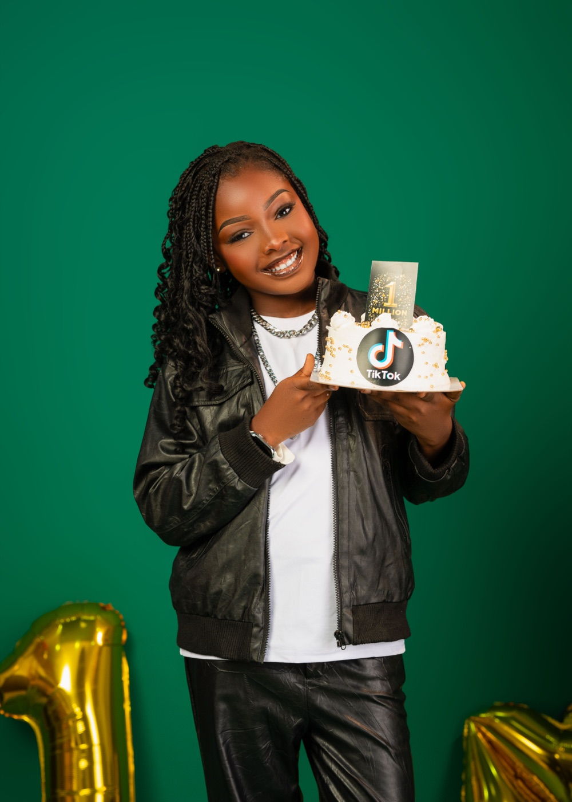
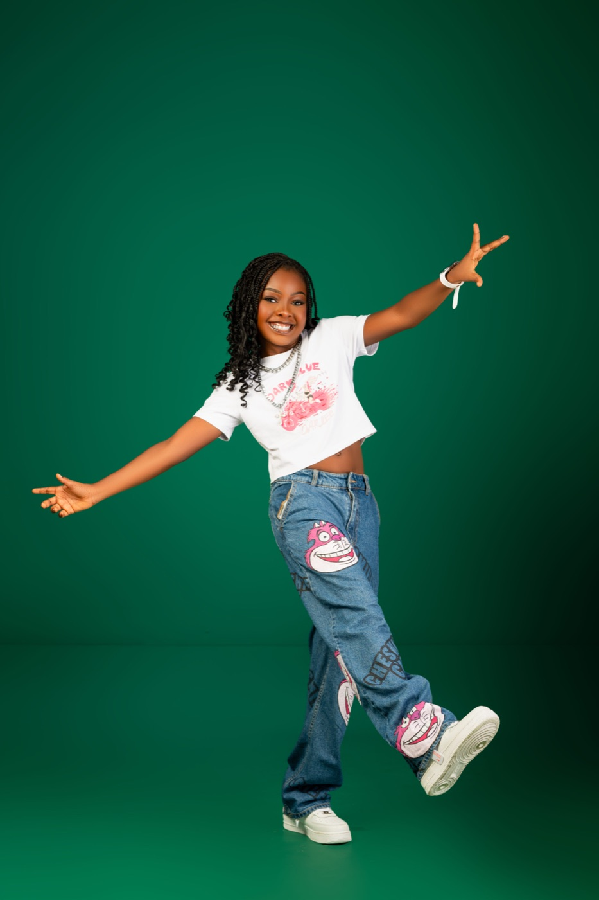

Our very own Bestie, SikaBaby, has officially hit 1 million followers on TikTok! The 11-year-old reached this incredible milestone on Sunday, 8th November 2026, and we couldn’t be more excited to celebrate her!
SikaBaby is a talented model, actress, and dancer who started creating content on TikTok in 2023 at the age of 8. Since then, she has consistently shown up, sharing dance videos, expressing herself, and showcasing her talent with her growing audience.
She is super excited about reaching one million followers and can’t wait for even more people to discover her and enjoy her content. She has also taken a moment to appreciate everyone who has supported her journey, especially her Sikababies.
SikaBaby officially became a Bestie when she joined us for our maiden Besties Summer Camp in September 2026. We are delighted to have her as part of our growing community and look forward to being part of more exciting moments in her journey.
Her journey is an example of what consistency, passion, and a willingness to express oneself can lead to. At just 11 years old, she has already built a community of one million people who enjoy and celebrate her creativity.
SikaBaby, we love seeing you grow and make your mark in the world. We are cheering you on and rooting for you every step of the way!
ONE MILLION FOLLOWERS, BESTIES!!! Let’s show SikaBaby some love and celebrate with her on TikTok: @callmesika

